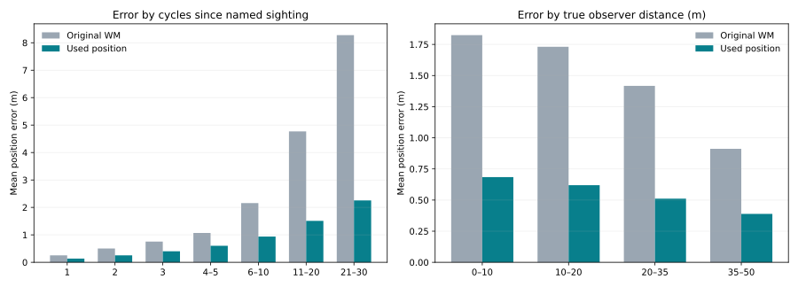
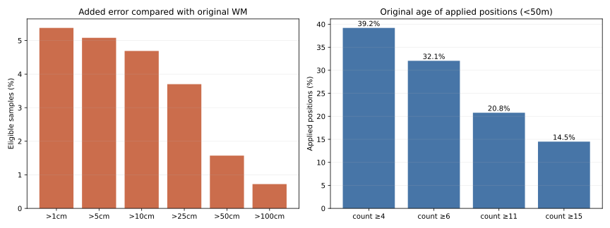
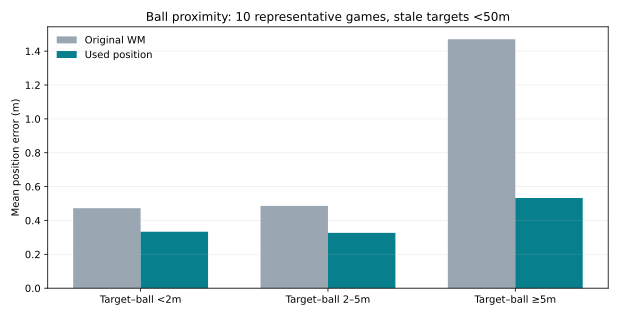

Later integration finding: the earlier apply path duplicated derived player-cache entries and could repeat identity inference. The current cache-v2 build fixes this. These historical match outcomes are not a clean gameplay evaluation of the intended prediction policy. See the final report.
Position accuracy improved, but the recorded game results worsened. The application is active and consistent with offline accuracy. This batch does not establish that lower average position error makes the team stronger.
Generated 2026-11-17 02:16 UTC. All 200 games and 4,400 observer logs finalized. Primary accuracy uses true observer-target distance below50m, PlayOn, valid identified stale tracks and confirmed named-sighting age1–30. Fullstate is labels only. Every eligible target-cycle has equal weight; games are not given equal weight for position averages.
| Metric | Result |
|---|---|
| Left/right goals | 628 / 705 |
| Left wins / draws / losses | 75 / 30 / 95 |
| Paired stale target-cycles below50m | 116,211,295 |
| Original WM mean position error | 141.55cm |
| Used mean position error | 52.62cm |
| Reduction in mean position error | 62.83% |
| Games with lower position-error mean | 200 / 200 |
| Improved by >1cm | 54.94% |
| Added error >1cm | 5.37% |
| Added error >25cm | 3.70% |
| Added error >50cm | 1.57% |
| Added error >1m | 0.72% |
| Maximum added error | 14.77m |
“Added error” means used error minus original WM error on the same target and cycle; it is not absolute position error. Unselected rows retain WM and stay in the denominator. Fresh and unsupported tracks are excluded from these paired accuracy figures. Selected positions below50m: 70,284,076; applied positions across all distances: 75,329,530. The frozen offline confirmation was134.98→52.30cm, with3.64% adding >25cm and1.70% adding >50cm.

| Group | Samples | Original mean cm | Used mean cm | Mean reduction | Added error >25cm |
|---|---|---|---|---|---|
| 1 | 48,121,579 | 25.38 | 13.57 | 46.6% | 3.19% |
| 2 | 22,530,159 | 50.38 | 25.27 | 49.8% | 3.23% |
| 3 | 9,385,765 | 75.50 | 40.14 | 46.8% | 3.41% |
| 4–5 | 8,569,019 | 106.87 | 60.25 | 43.6% | 4.41% |
| 6–10 | 10,658,088 | 215.74 | 93.72 | 56.6% | 5.38% |
| 11–20 | 10,999,453 | 477.10 | 150.94 | 68.4% | 4.66% |
| 21–30 | 5,947,232 | 827.63 | 225.43 | 72.8% | 4.25% |
| Group | Samples | Original mean cm | Used mean cm | Mean reduction | Added error >25cm |
|---|---|---|---|---|---|
| 0–10 | 10,868,133 | 182.42 | 68.42 | 62.5% | 3.62% |
| 10–20 | 30,636,993 | 173.09 | 61.95 | 64.2% | 3.94% |
| 20–35 | 46,574,646 | 141.70 | 51.10 | 63.9% | 3.85% |
| 35–50 | 28,131,523 | 91.17 | 38.87 | 57.4% | 3.22% |
| Group | Samples | Original mean cm | Used mean cm | Mean reduction | Added error >25cm |
|---|---|---|---|---|---|
| teammates | 56,559,461 | 139.46 | 51.98 | 62.7% | 3.69% |
| opponents | 59,651,834 | 143.54 | 53.22 | 62.9% | 3.71% |
About 14.50% of applied positions below50m still had original
posCount≥15. The current librcsc player-intercept simulator returns1000 for
such a player before simulating it. Other paths also use position age to skip
players or expand their effective reach. Better coordinates do not remove
those gates when the age is preserved.
These counters measure exposure to code gates, not how often a particular decision actually entered each branch. Observations alone do not prove these branches caused the match losses.
| Original count condition | Applied positions below50m | Share of applied positions |
|---|---|---|
| ≥4 | 27,550,877 | 39.20% |
| ≥6 | 22,533,621 | 32.06% |
| ≥11 | 14,606,286 | 20.78% |
| ≥15 | 10,194,343 | 14.50% |
Code checked in the current checkout:
librcsc-denoise/rcsc/player/intercept_simulator_player.cpp: the posCount≥15
gate; prediction routing through decisionPos is present.helios-base-denoise/src/player/planner/strict_check_pass_generator.cpp:
skips stale opponents above10 and uses age-based opponent reach bonuses.planner/short_dribble_generator.cpp: opponent bonus up to8 or4 cycles.planner/field_analyzer.cpp: virtual dash distance depends on the smaller
of seenPosCount and posCount.For the next batch use --player-gap-pos-count zero on the left only.
It makes effective posCount zero only on accepted overlays and preserves raw
tracking/visual ages. It therefore tests age-based decision behavior while
keeping the same model and threshold.
Zero does not remove every stale-data effect: the player-intercept bonus still reads seenPosCount/heardPosCount, and velocity/body ages remain original. An accurate current point also does not establish accurate future motion. Zero may help or may make the agent too optimistic about bad predictions; its performance has not yet been measured.

For 24,280,560 eligible rows with original WM error below10cm, the mean changed 1.43→4.84cm. 7.80% of this subgroup added >25cm error. The mean remains small, but rare severe regressions are hidden by that average. These are truth-defined diagnostic groups, not deployable oracle gates.
| Group | Samples | Original mean cm | Used mean cm | Mean reduction | Added error >25cm |
|---|---|---|---|---|---|
| 0–10cm | 24,280,560 | 1.43 | 4.84 | -238.0% | 7.80% |
| 10–25cm | 10,582,122 | 17.33 | 16.87 | 2.6% | 6.63% |
| 25–50cm | 31,799,328 | 39.83 | 22.11 | 44.5% | 1.75% |
| 50–100cm | 17,975,115 | 74.85 | 40.81 | 45.5% | 2.44% |
| 1–2m | 11,534,656 | 140.51 | 75.50 | 46.3% | 3.03% |
| 2m+ | 20,039,514 | 598.78 | 175.23 | 70.7% | 1.79% |
Worst overall below50m regression: 202611161920_12839/l_11,
cycle1547, object21. Named age29,
original count29, observer distance46.50m.
Original error 3.04m, used error
17.82m, added 14.77m.
Its routing score0.976 is not a calibrated correctness probability.
The worst-error cycle and a separate already-accurate-WM failure were replayed through the original PyTorch pipeline. Across36 eligible outputs in those cycles, position differences stayed below0.000066m, including CSV rounding, with zero routing disagreements. The severe model proposals reproduce in Python; they are not explained by a different C++ calculation in these cases.
This section uses 10 evenly spaced game IDs /110 left observers, selected without looking at game outcomes. These are descriptive sampled-game results, not all200 games. Distances to the ball use truth for reporting only.

| Group | Samples | Original mean cm | Used mean cm | Mean reduction | Added error >25cm |
|---|---|---|---|---|---|
| target_ball_under2m | 163,978 | 47.22 | 33.34 | 29.4% | 1.65% |
| target_ball_2to5m | 127,170 | 48.64 | 32.69 | 32.8% | 4.22% |
| target_ball_5mplus | 5,538,261 | 147.02 | 53.29 | 63.8% | 3.64% |
| observer_ball_under3m | 240,118 | 210.66 | 69.39 | 67.1% | 3.88% |
| observer_ball_3mplus | 5,589,291 | 139.12 | 51.54 | 63.0% | 3.59% |
The largest average gains are away from the ball. For stale targets within2m of it, mean error changed 47.22→33.34cm (29.4% reduction), compared with 63.8% for targets at least5m from it. Only2.81% of the eligible stale rows in this sample were within2m of the ball. Fresh rows are excluded, so this percentage must not be interpreted as the fraction of all players near the ball. Large gains on many less immediate states do not translate directly into goals.
For 4,235,177 rows with
valid current WM velocity and consecutive PlayOn truth, evaluate
current_position + current_WM_velocity against the true next-cycle position.
The same velocity is used for original and corrected positions. Mean one-step
error changed 69.01→
45.90cm.
This simple forecast improved on that matched subset; it is not the complete
intercept/planner simulation and does not validate stale velocity/body estimates.
Per-game inference medians were13.55– 15.03ms; per-game p95s were 22.85–25.21ms. Largest recorded inference was85.90ms. Per-game percentiles are kept separate; they were not averaged into a global p95.
No model/runtime/unknown-column errors in the team console logs. All expected console and command-order files were found.
The earlier all-stock Exp5 batch (200 games) had goals 678–660 and wins/draws/losses 87/44/69 for the left side. This batch has 628–705 and75/30/95. The batch means of left-minus-right goals changed from+0.09 to−0.385 per game. An independent-game bootstrap95% interval for that change was approximately [-0.925, -0.015] goals/game. This is an unpaired, historical-batch comparison, not a matched-seed causal estimate.
Among decisive games in the current batch, the left win rate is 44.12%, Wilson95% interval [36.87%,51.63%]. This differs from the ordinary75/200 win rate: draws must be handled consistently when comparing with50%.
The recorded gameplay direction is worse and should be taken seriously. Position-error reduction is not an adequate success criterion by itself. The data identify retained age gates, occasional destruction of already-good WM states, and smaller gains on immediate ball-near targets as concrete issues; they do not isolate a single cause of the losses.
For the zero-count trial keep the model, threshold and server/view configuration
fixed. Use left-only --player-gap-pos-count zero and a separate
logs/exp5-live-zero directory. Compare gameplay, position accuracy, regression
tails and count-gate exposure with this preserve batch. A zero-count result is
still pending; no benefit is promised from that switch.
cd /home/nader/workspace/denoise
exp=rcssserver-denoise/experiments/exp5/exp5-s1
.venv-exp5-s1/bin/python "$exp/code/audit_player_gap_batch.py" \
logs/exp5-live-preserve logs/exp5-s1/live-analysis/preserve-200 --workers 6
.venv-exp5-s1/bin/python "$exp/code/audit_player_gap_context.py" \
logs/exp5-live-preserve logs/exp5-s1/live-analysis/preserve-200/summary.json \
logs/exp5-s1/live-analysis/preserve-200/context --workers 6
.venv-exp5-s1/bin/python "$exp/code/report_player_gap_live.py" \
logs/exp5-s1/live-analysis/preserve-200 "$exp/reports/live-preserve-200"
Per-game summaries and detailed context observer caches are under logs/exp5-s1, outside Git. Means and worsening rates aggregate exact sample counts and sums; per-game p95 values are retained separately. Runtime/baseline bootstrap evidence is in runtime.json. Severe-cycle PyTorch checks are in the two output-check JSONs. Current runtime inference/model/weights were not changed by this audit.